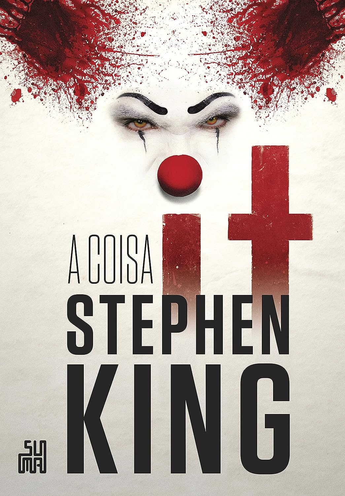

Você sabe quais são os 10 livros de horror com as melhores avaliações?
Conheça os títulos de horror mais bem avaliados no site da Amazon
A sua hora da leitura vai ficar mais divertida! A Rolling Stone elencou os 10 títulos com as melhores avaliações na Amazon. Encontre obras de autores renomados como Edgar Allan Poe, Stephen King. Abaixo são mostrados três dos dez títulos selecionados!
It: A Coisa, de Stephen King (2014)
Sinopse: Durante as férias de 1958, em uma pacata cidadezinha chamada Derry, um grupo de sete amigos começa a ver coisas estranhas. Um conta que viu um palhaço, outro que viu uma múmia. Finalmente, acabam descobrindo que estavam todos vendo a mesma coisa: um ser sobrenatural e maligno que pode assumir várias formas. É assim que Bill, Beverly, Eddie, Ben, Richie, Mike e Stan enfrentam a Coisa pela primeira vez.
O Rei da Terra do Nunca, de Nikki St. Crowe (2023)
Sinopse: Por dois séculos, todas as mulheres da família Darling desapareciam quando completavam dezoito anos. Às vezes, ficavam longe por um dia, uma semana ou até um mês. Mas sempre retornavam destruídas. Agora, na tarde do aniversário de dezoito anos de Winnie Darling, sua mãe está trancando todas as janelas e portas.

O Corvo e Outras Histórias, de Edgar Allan Poe (2021)
Sinopse: Leia contos de Edgar Allan Poe, que debate temas tenebrosos como ira, tortura, vingança, engano e ganância. Toda essa aura sepulcral perpassa as obras selecionadas para esta edição em cada dura, com fitilho e ilustrações originais de Gustave Doré.